Chikushino
Chikushino · Fukuoka
Chikushino
Highlighted on the Fukuoka map.
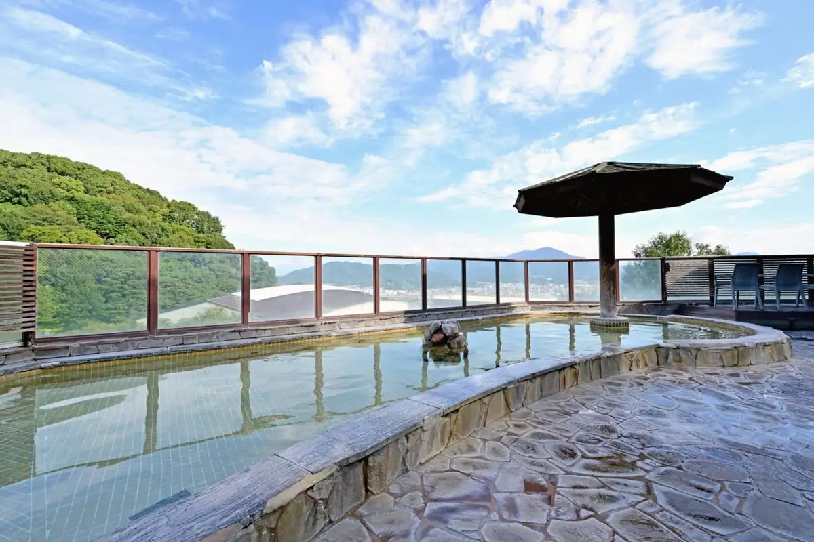
Sights
Chikushino Ten Hai no Sato
Futsuka City Onsen
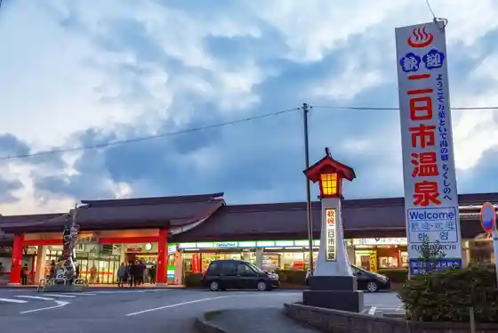
Ten Hai Yama
Futsuka City Onsen (Omae Yu)
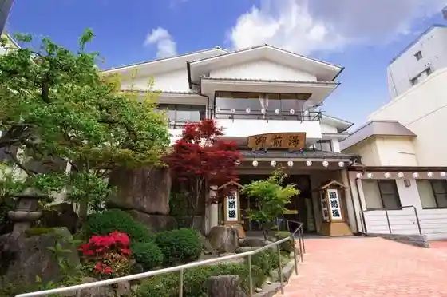
Hakata Yu
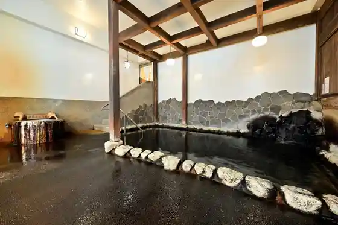
Chikushino Onsen Amandi
Chikushino General Park
Daimaru Besso
Musashi Tera
Daikanso
Ten Hai Yama Rekishi Nature Park
Chikushino Ritsu Ryu Iwa Nature no Ie
Goro Yama Burial Mound (Goro Yama Kofun Kan)
Sanshin Dam
Chikushi Shrine
O Kashi Tsukasa Ume Ie
Chikushi Baths
Ebisu Shoyu
Dining
よか鶏 筑紫野二日市店
Yoka Niwatori Chikushino Futsukaichi Mise

鉄板と鶏焼肉 翠 KAWASEMI
Teppan To Niwatori Yakiniku Sui Kawasemi

焼鳥 しょうじん 二日市店
Yakitori Shoujin Futsukaichi Mise

や台ずし 西鉄二日市駅前町
Ya Dai Zushi Nishitetsu Futsukaichi Ekimae Machi

焼肉龍王館 二日市店
Yakiniku Ryuuou Kan Futsukaichi Mise

韓国居酒屋 イニョン
Kankoku Izakaya Inyon

丸秀鮮魚店 二日市店
Maru Shuu Sengyoten Futsukaichi Mise

焼肉タンとハラミ まっちゃん 二日市店
Yakiniku Tan To Harami Matchan Futsukaichi Mise

ル・ドゥ・マルシェ
Ru・Dou・Marushie
個室居酒屋 バリチカ 製作所
Koshitsu Izakaya Barichika Seisakusho
創作dining 壱知
Sousaku Dining Itchi
琉球ダイニング ACE
Ryuukyuu Dainingu Ace
ディンプル
Dinpuru
小さな韓国 あぷろ 二日市店
Chiisa Na Kankoku Apuro Futsukaichi Mise
鉄板焼 舞
Teppanyaki Mai
二日市 つね沢
Futsukaichi Tsune Sawa
キッチンSHU LaBo
Kitchin Shu Labo
ムッシュさかい 筑紫野店
Musshu Sakai Chikushino Mise
OTONARIバル 悠助
Otonari Baru Yuu Jo
福岡焼き鳥 鮮笑 筑紫野店
Fukuoka Yakitori Sen Warai Chikushino Mise
元祖トマトラーメン 三味 ゆめタウン筑紫野店
Ganso Tomatoraamen Shami Yume Taun Chikushino Mise
大名やぶれかぶれ 二日市店
Daimyou Yaburekabure Futsukaichi Mise
木鶏
Mokkei
月のささやき
Gatsu Nosasayaki
藁焼と鍋 結
Wara Yaki To Nabe Ketsu
Klabo Sweets & Delica
Klabo Sweets &Amp; Delica
焼鳥 鷄囲夢
Yakitori Niwatori I Yume
菓子処 天本家
Kashi Tokoro Amamoto Ie
鳥貴族 西鉄二日市店
Tori Kizoku Nishitetsu Futsukaichi Mise
筑紫野温泉 アマンディ
Chikushino Onsen Amandi
スナック メール
Sunakku Meeru
百年ラーメン
Hyakunen Raamen
MOA cafe 東京インテリア家具 筑紫野店
Moa Cafe Toukyou Interia Kagu Chikushino Mise
山下鹿造商店 イオンモール筑紫野店
Yamashita Shika Zou Shouten Ionmooru Chikushino Mise
アラスカ
Arasuka
古民家cafe 華蔵
Ko Minka Cafe Kezou
たぬ久 筑紫野店
Tanu Kyuu Chikushino Mise
博多だるま ５号線
Hakata Daruma 5 Gousen
天然温泉 博多湯
Tennen Onsen Hakata Yu
ファミリーマート 筑紫野桜台店
Famiriimaato Chikushino Sakuradai Mise
時計台
Tokeidai
フォーシーズン 筑紫野店
Fooshiizun Chikushino Mise
しゃぶしゃぶ美山 筑紫野店
Shabushabu Miyama Chikushino Mise
イエノミ ナニワ 301
Ienomi Naniwa 301
まんぷく酒場 たまねぎ
Manpuku Sakaba Tamanegi
王子カレー 筑紫野店
Ouji Karee Chikushino Mise
やきとり炭家
Yakitori Sumi Ie
シャトレーゼ 筑紫野原田店
Shatoreeze Chikushino Harada Mise
左衛門 ゆめタウン筑紫野店
Zaemon Yume Taun Chikushino Mise
井手ちゃんぽん 筑紫野原田店
Ide Chanpon Chikushino Harada Mise
みつせ
Mitsuse
みっちゃんラーメン
Mitchan Raamen
亞近
A Kin
かすみ草
Kasumi Kusa
麺屋 八商店
Men Ya Hachi Shouten
たこやき亭 二日市店
Takoyaki Tei Futsukaichi Mise
ELEPHANT COFFEE
Elephant Coffee
焼きとりもつ鍋 太閤 二日市店
Yaki Torimotsu Nabe Taikou Futsukaichi Mise
KIFF
Kiff
ラ・メール
Ra・Meeru
Koi Hiromatsu Chikushino Fukuoka Prefecture Kyushu
Koi Hiromatsu Chikushino Fukuoka Prefecture Kyushu
Koi Hiromatsu Chikushino Fukuoka Prefecture Kyushu
Koi Hiromatsu Chikushino Fukuoka Prefecture Kyushu
Koi Hiromatsu Chikushino Fukuoka Prefecture Kyushu
Koi Hiromatsu Chikushino Fukuoka Prefecture Kyushu
Koi Hiromatsu Chikushino Fukuoka Prefecture Kyushu
Koi Hiromatsu Chikushino Fukuoka Prefecture Kyushu
Daichi no Udon Chikushino Chikushino Fukuoka Prefecture Kyushu
Daichi no Udon Chikushino Chikushino Fukuoka Prefecture Kyushu
Daichi no Udon Chikushino Chikushino Fukuoka Prefecture Kyushu
Daichi no Udon Chikushino Chikushino Fukuoka Prefecture Kyushu
Daichi no Udon Chikushino Chikushino Fukuoka Prefecture Kyushu
Daichi no Udon Chikushino Chikushino Fukuoka Prefecture Kyushu
Daichi no Udon Chikushino Chikushino Fukuoka Prefecture Kyushu
Daichi no Udon Chikushino Chikushino Fukuoka Prefecture Kyushu
Ramen Danbo Futsukaichi Main Store Chikushino Fukuoka Prefecture Kyushu
Ramen Danbo Futsukaichi Main Store Chikushino Fukuoka Prefecture Kyushu
Ramen Danbo Futsukaichi Main Store Chikushino Fukuoka Prefecture Kyushu
Ramen Danbo Futsukaichi Main Store Chikushino Fukuoka Prefecture Kyushu
Ramen Danbo Futsukaichi Main Store Chikushino Fukuoka Prefecture Kyushu
Ramen Danbo Futsukaichi Main Store Chikushino Fukuoka Prefecture Kyushu
Ramen Danbo Futsukaichi Main Store Chikushino Fukuoka Prefecture Kyushu
Ramen Danbo Futsukaichi Main Store Chikushino Fukuoka Prefecture Kyushu
Juwarisoba Kazenotami Chikushino Fukuoka Prefecture Kyushu
Juwarisoba Kazenotami Chikushino Fukuoka Prefecture Kyushu
Juwarisoba Kazenotami Chikushino Fukuoka Prefecture Kyushu
Juwarisoba Kazenotami Chikushino Fukuoka Prefecture Kyushu
Juwarisoba Kazenotami Chikushino Fukuoka Prefecture Kyushu
Juwarisoba Kazenotami Chikushino Fukuoka Prefecture Kyushu
Juwarisoba Kazenotami Chikushino Fukuoka Prefecture Kyushu
Juwarisoba Kazenotami Chikushino Fukuoka Prefecture Kyushu
Himehotaru Chikushino Fukuoka Prefecture Kyushu
Himehotaru Chikushino Fukuoka Prefecture Kyushu
Himehotaru Chikushino Fukuoka Prefecture Kyushu
Himehotaru Chikushino Fukuoka Prefecture Kyushu
Himehotaru Chikushino Fukuoka Prefecture Kyushu
Himehotaru Chikushino Fukuoka Prefecture Kyushu
Himehotaru Chikushino Fukuoka Prefecture Kyushu
Himehotaru Chikushino Fukuoka Prefecture Kyushu
Ide Champon Chikushino Haruda Chikushino Fukuoka Prefecture Kyushu
Ide Champon Chikushino Haruda Chikushino Fukuoka Prefecture Kyushu
Ide Champon Chikushino Haruda Chikushino Fukuoka Prefecture Kyushu
Ide Champon Chikushino Haruda Chikushino Fukuoka Prefecture Kyushu
Ide Champon Chikushino Haruda Chikushino Fukuoka Prefecture Kyushu
Ide Champon Chikushino Haruda Chikushino Fukuoka Prefecture Kyushu
Ide Champon Chikushino Haruda Chikushino Fukuoka Prefecture Kyushu
Ide Champon Chikushino Haruda Chikushino Fukuoka Prefecture Kyushu
Daimarubessoh Bunten Ginnotsubo Chikushino Fukuoka Prefecture Kyushu
Daimarubessoh Bunten Ginnotsubo Chikushino Fukuoka Prefecture Kyushu
Daimarubessoh Bunten Ginnotsubo Chikushino Fukuoka Prefecture Kyushu
Daimarubessoh Bunten Ginnotsubo Chikushino Fukuoka Prefecture Kyushu
Daimarubessoh Bunten Ginnotsubo Chikushino Fukuoka Prefecture Kyushu
Daimarubessoh Bunten Ginnotsubo Chikushino Fukuoka Prefecture Kyushu
Daimarubessoh Bunten Ginnotsubo Chikushino Fukuoka Prefecture Kyushu
Daimarubessoh Bunten Ginnotsubo Chikushino Fukuoka Prefecture Kyushu
Yokatori Chikushino Futsukaichi Chikushino Fukuoka Prefecture Kyushu
Yokatori Chikushino Futsukaichi Chikushino Fukuoka Prefecture Kyushu
Yokatori Chikushino Futsukaichi Chikushino Fukuoka Prefecture Kyushu
Yokatori Chikushino Futsukaichi Chikushino Fukuoka Prefecture Kyushu
Yokatori Chikushino Futsukaichi Chikushino Fukuoka Prefecture Kyushu
Yokatori Chikushino Futsukaichi Chikushino Fukuoka Prefecture Kyushu
Fukuei no Karaage JR Futsukaichi Station Chikushino Fukuoka Prefecture Kyushu
Fukuei no Karaage JR Futsukaichi Station Chikushino Fukuoka Prefecture Kyushu
Fukuei no Karaage JR Futsukaichi Station Chikushino Fukuoka Prefecture Kyushu
Fukuei no Karaage JR Futsukaichi Station Chikushino Fukuoka Prefecture Kyushu
Fukuei no Karaage JR Futsukaichi Station Chikushino Fukuoka Prefecture Kyushu
Fukuei no Karaage JR Futsukaichi Station Chikushino Fukuoka Prefecture Kyushu
Fukuei no Karaage JR Futsukaichi Station Chikushino Fukuoka Prefecture Kyushu
Fukuei no Karaage JR Futsukaichi Station Chikushino Fukuoka Prefecture Kyushu
Ryutenro Chikushino Fukuoka Prefecture Kyushu
Ryutenro Chikushino Fukuoka Prefecture Kyushu
Ryutenro Chikushino Fukuoka Prefecture Kyushu
Ryutenro Chikushino Fukuoka Prefecture Kyushu
Ryutenro Chikushino Fukuoka Prefecture Kyushu
Ryutenro Chikushino Fukuoka Prefecture Kyushu
Ryutenro Chikushino Fukuoka Prefecture Kyushu
Ryutenro Chikushino Fukuoka Prefecture Kyushu
Issei Chikushino Fukuoka Prefecture Kyushu
Issei Chikushino Fukuoka Prefecture Kyushu
Stay
ウィークリーイン二日市
Uiikuriiin Futsukaichi
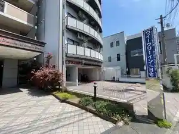
二日市グリーンホテル
Futsukaichi Guriinhoteru
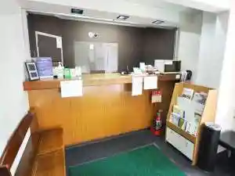
アイビーホテル筑紫野
Aibiihoteru Chikushino
大観荘
Daikansou
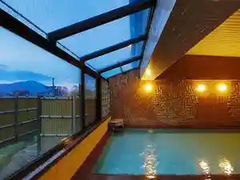
パープルホテル二日市
Paapuruhoteru Futsukaichi
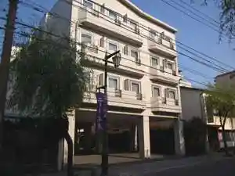
松原旅館
Matsubara Ryokan
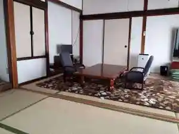
大丸別荘
Daimaru Bessou
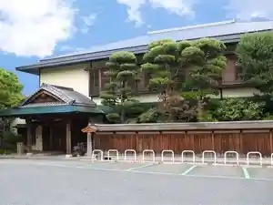
ＡＯ太宰府
A O Dazaifu
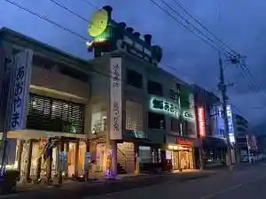